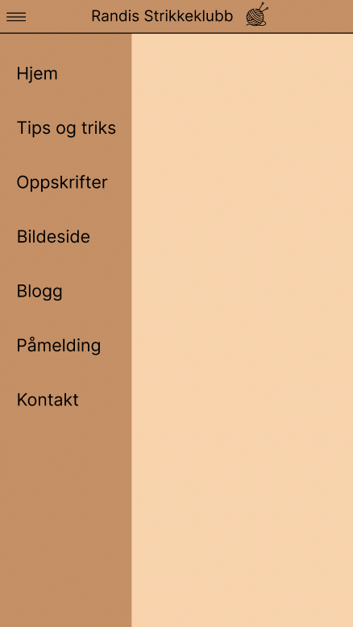
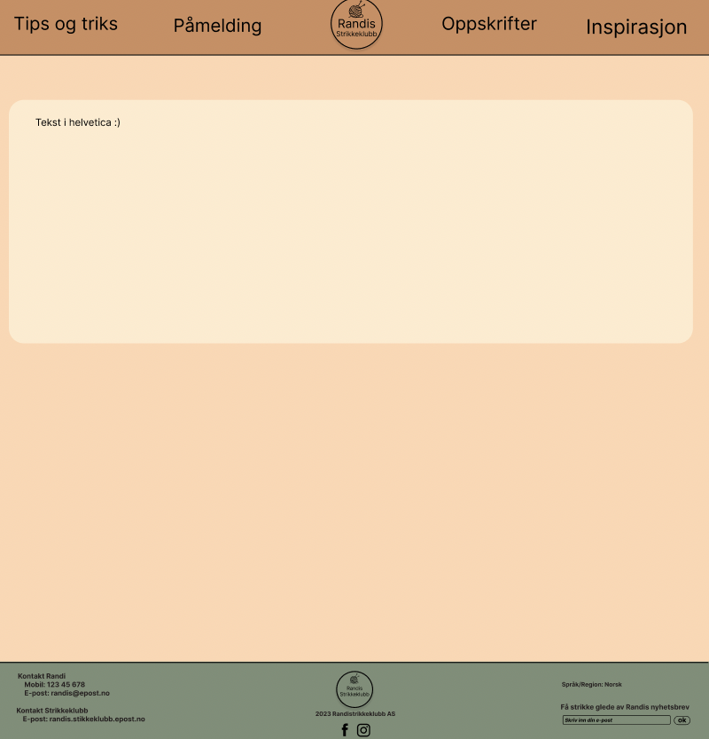
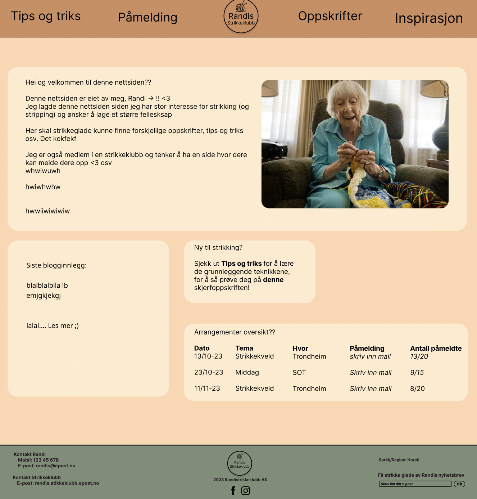
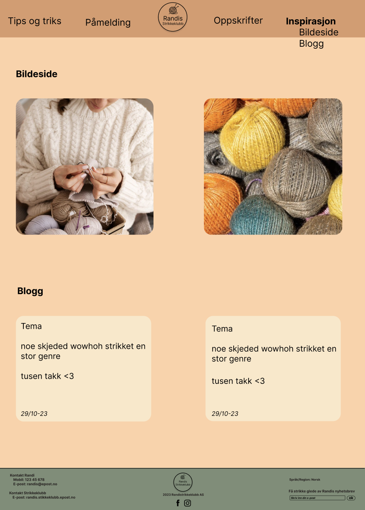
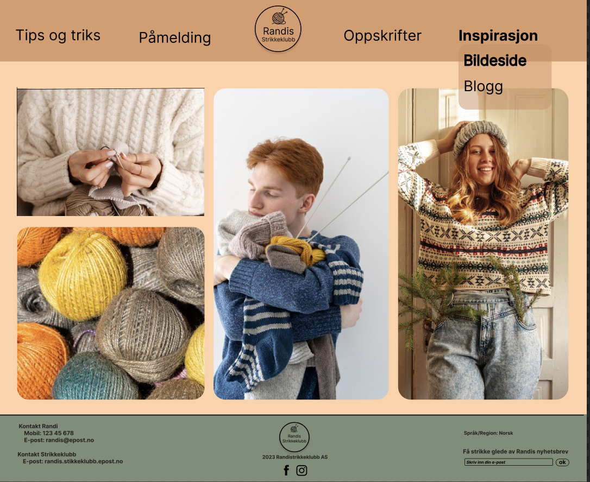
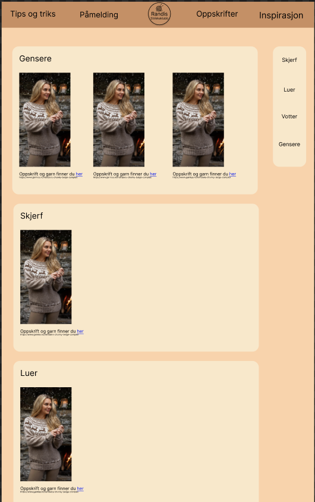
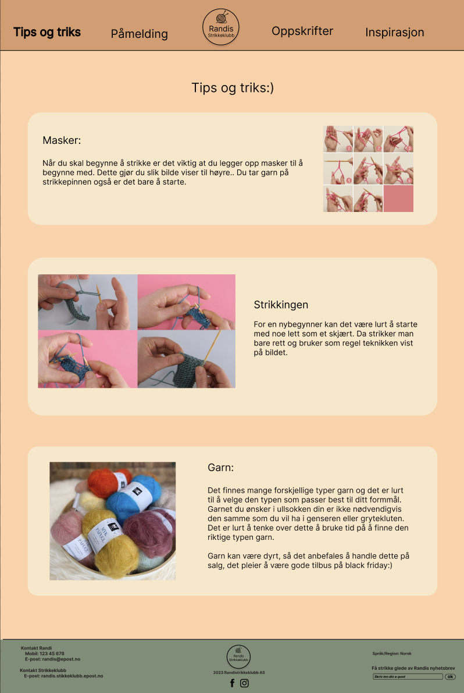

Helene, Sarah, Anette, Dina, Christina og Victoria
16. oktober 2023
Administrative detaljer
Vår imaginære klient er Randi på 35 år, hun har en strikkeklubb men ønsker også å lage en nettside for å dele oppskrifter, legge ut påmelding til arrangementer, utvide nettverket med likesinnende.
Randi, 35 år, i sitt rette element
Hennes store lidenskap for strikking er noe hun ønsker å dele med andre. Hun har en strikkeklubb men ønsker en platform hvor flere kan få inspirasjon og lære. Hun tenker også at denne nettsiden kan hjelpe å få flere medlemmer i strikkeklubben hennes. Nettsiden skal fungere som en inspirasjon og påmeldigsside for hennes strikkeklubb. Det skal være en lavterskel for å delta på strikkedagene i klubben. Nettsiden skal også ha en blogg hvor hun deler om sine egne prosjekter men også poster om hva som foregår på strikkemøtene. Det skal også være en side med tips og triks som er en fin start for de som ønsker å lære seg å strikke.
Formål og visjon
Nettsiden er tenkt til å være en plattform for strikkeklubben til Randi, hvor man kan se oppskrifter, bilder, melde seg opp til strikkedager og samtidig lese bloggen til Randi.
Randi har sagt at dette er hva hun ønsker av krav:
Randi er glad i farger og vil gjerne ha en høst themed nettside
Hun ønsker at utformingen skal være enkel og brukervennlig i håp med å få med mest mulig folk
En side med arangementer og påmeldingsliste hvor man kan legge inn kontaktinformasjon og få bekreftelse på at dem er påmeldt arrangement
En egen blogg hun kan selv skrive på om strikkemøtene, arrangementene men også egne tanker og prosjekter
En bildevegg med bilder av prosjektene og strikkemøtene
Målgruppe/publikum
Målgruppen er for de som er interessert i strikking og mulgiens lokale folk som kunne ønske seg å bli med på fysiske strikkeklubb møter. Målgruppen er for både unge og gamle, så lenge de har interesse for strikking.
Navigasjon og struktur
Vi ønsker at hjemmesiden vår skal være strukturert på en slik måte at man kan nå alle sidene uansett hvilken side man er inne på gjennom navigasjonsbaren.
Dette fordi vi ønsker at alle sidene skal være tilgjengelige og enkelt å finne frem til for alle. Vi ønsker å ha et fokus på brukervennelighet basert på de som er mulige brukere av nettsiden vår.
Gjennom denne utformingen vil også nettsiden bli visuelt pen og ryddig. Det kan være ulike grunner for besøket av nettsiden vår, derfor vil det være viktig at det er enkelt for brukeren å finne frem til den nettsiden, eller informasjonen, de ønkser.
Utforming og design av nettsiden(e)
Font: Helvetica
Font size: Vi tenker 16px, men skal se om det endres etterhvert
Fargepalett: Brun og grønn: #CE8D5E, #FFD6B0, #FFEBCD, #7D8E77
Tekstfarge: Svart
Navigasjonsbar: Ønsker at denne skal være øverst og vises hele tiden. Når man hovrer over et element som har undermenyer så skal disse vises i en boks, og boksen skal ha en skyggeeffekt rundt seg. Tekstnavnet for siden man er inne på skal utheves gjennom "bold". Ønsker at logoen skal være på midten og samtidig linke til hovedsiden ved klikk.
Ønsker en svart border mellom toppmeny og body.
En footer er viktig for å gi en helhetlig og brukervennlig opplevelse for brukeren på nettsiden. I footeren har vi kontaktinformasjon, nyhetsbrev, linker til sosiale medier som instagram og facebook. Denne skal ha en annen farge (grønn) enn resten av siden.
Finnes nederest på alle sidene. Ønsker samme border mellom footer og body.
Link: Denne skal være standard pga brukervennelighet.
Responsivt design, universell utforming. Ved endring av bredde på skjerm vil nettsiden få ulik utforming, f.eks. at navbar blir til burgerbar på mobil
Burgerbar
Eksempel på responsivt design

Generell utforming

Nettsidens innhold
1. Hjemmesiden
Hjemmesiden vil være hovedsiden for Randis Strikkeklubb. Her vil det være en liten oversikt med en infotekst og bilde av Randi, det siste blogginnlegget som en kan klikke seg inn på, link til “Tips og triks” siden, samt oversikt over kommende arrangementer.
Denne siden vil være tilgjengelig fra alle andre sider på nettsiden, ved å trykke på logoen i toppmenyen.

2. Inspirasjon
Inspirasjonssiden vil bare være en veiviser for å komme til undersidene «Bildeside» og «Blogg».
Hovedsakelig vil dette være en undermeny som kommer fram når man hovrer over «Inspirasjon». Men for at siden skal oppfylle kravene om at den skal være enkel og brukervennlig for alle, vil en også kunne klikke på «Inspirasjon» hvor en kommer til en side som viser de siste innleggene på bildesiden og på bloggen. Her har en mulighet til å klikke seg videre inn på disse sidene.

3. Bildeserie
Bildesiden vil gå under inspirasjon i menyen. Når man hovrer over «Inspirasjon» vil det komme opp en rullemeny der alternativene er å gå inn på «Bildeside» eller «Blogg». På bildesiden vil det være bilder av de som deltar i strikkeklubben, samt strikketøy og produkter som de har laget, i håp om å inspirere enda flere til å strikke og kanskje delta i klubben.
For å gjøre det brukervennlig og lett å se bildene, vil bakgrunnsfargen være lik som på hovedsiden; en enkel farge, slik at bildene kommer tydeligere fram. Bildene vil være tilpasset hvert enkelt bilde, slik at stående bilder får en høyere høyde, mens liggende bilder får en bredere bredde. Bildene vil være mindre enn 100 kB for at de skal loade kjapt. Men når man hovrer over dem, vil bildene bli forstørret og det samme når de blir trykket på.

4. Blogg
Bloggsiden skal være som en side som gir litt informasjon om morsomme hendelser og noen beskjeder og kanskje litt referat fra møter. Her skal det være tydelige bokser som avskiller de ulike meldinger. De nyeste meldingene skal stå øverst, og til høyre skal det være en meny for hva slags type innlegg man ser etter, hvis det er noe spesielt man leter etter. Det kan være temaer som: referat fra møte, beskjed, artig (her står det bare noe morsomt som har skjed på møte eller noe liknende), snacks-ansvarlig for neste møte osv. Nederst på hvert innlegg skal det stå en dato for når innlegget ble publisert. Det skal være mulig å scrolle nedover til eldre innlegg.
5. oppskrifter
Denne siden inneholder adskilte bokser med bilder av strikkeprodukt, med en tilhørende link under. Fordelinger av oppskrifter er delt inn i hvilken type produkt det er, så for eksempel vil gensere være i en boks og skjerf i en annen. Linken fører brukeren til en ekstern side der en finner oppskriften på det produktet det er bilde av. Det vil i tillegg være en meny på siden hvor du kan trykke for å komme til votter, luer etc.

6. Tips og triks
Siden har tips og triks på hvordan man skal få hjelp til hvordan man skal strikke. Det er ulike bokser med foklaring på hvordan man lager masker, hvordan man strikker vanlig, hva slafs garn man kan benytte, hvordan man vasker strikken etter den er ferdig osv. Det skal være noen bilder på siden som er til hjelp. Bildene skal stå i boksen med teksten som passer til bildet. Dette er for å vise tydelig for bruker.

7. Påmelding
Påmeldingssiden vil være en side hvor brukeren kan skrive inn navn, telefonnummer/mail(?) og huke av en boks for å så klikke ‘ok’ for å bli med på neste arrangement. Det vil også være en oversikt over de kommende arrangementene. I tillegg er det bilder av tidligere arrangementer for at brukeren skal vite hva en kommer til, samtidig for å friste brukeren til å melde seg på.
JavaScript
Funksjoner vi ønsker å bruke JavaScript til:
Kalkulasjoner: Hvor mange er påmeldt: også økes tallet for antall påmeldte
On-click - gjør det mer mobilvennlig, gjør dette til hamburgermenyen
Bildeserie - trykke på bildet også får man mer informasjon.
Slideshow på inspirasjonssiden før man går inn på bildesiden
Plan
Filtstruktur
hjemmesiden.html
inspirasjon.html
blogg.html
bildesiden.html
tips_og_triks.html
strikkeoppskrifter.html
påmelding.html
bilder/
bildesiden.png
....
scripts/
kalkulasjoner.js
on_click.js
bildeside.js
slideshow.js
style.css
Filnavn/oppgave
Forklaring
Ansvar
Deadline
hjemmesiden.html
Hjemmesiden
Alle
24. oktober
inspirasjon.html
Inspirasjon siden
Helene
31. oktober
blogg.html
Blogg
Anette
31. oktober
bildeside.html
Side med ulike bilder
Helene
31. oktober
tips_og_triks.html
Tips og triks for strikking
Christina
31. oktober
strikkeoppskrifter.html
Ulike Strikkeoppskrifter
Dina
31. oktober
påmelding.html
Påmelding til ulike arrangementer
Sarah
31. oktober
footer
Footer som er felles for alle sidene
Christina
24. oktober
navigasjonsbar
Navigasjonsbar, felles for alle sidene
Victoria
24. oktober
kalkulasjoner.js
Påmelding til arrangementer
Sarah
7. november
on_click.js
Hamburgermeny ved endring av skjermstørrelse til liten (@media)
Victoria
7. november
bildeserie.js
Få opp mer informasjon når man trykker på bildet
Dina
7. november
slideshow.js
På inspirasjonsiden skal det være en slideshow med bilder